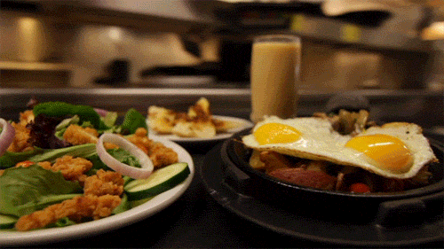

Huevos con Filete:
Filete de res o cerdo (puede ser lomo, entrecot, o cualquier corte que prefieras). .Sal y pimienta al gusto
combina los sabores clásicos de la cocina ofreciendo
platos frescos y sorprendentes que destacan
por
su sencillez y calidad
Filete de res o cerdo (puede ser lomo, entrecot, o cualquier corte que prefieras). .Sal y pimienta al gusto
Una sopa espesa hecha con carnes (pollo, res o pescado), yuca, plátano, maíz y verduras. Es muy reconfortante y se sirve con arroz.
Huevos sobre pan y jamón, cubiertos con salsa holandesa y decorados. Tostada Francesa: Pan empapado en huevo y canela, dorado y servido con jarabe y frutas frescas. Smoothie Bowl: Batido de frutas congeladas en un bol, cubierto con granola y frutas frescas. Café de especialidad con opciones de leches vegetales

1. Cóctel de Maracuyá y Gin Mezcla de gin premium, jugo de maracuyá fresco y un toque de jarabe de azúcar, decorado con una rodaja de maracuyá. Es refrescante y tropical.
2. Margarita de Lulo Descripción: Versión colombiana de la margarita, hecha con lulo, tequila, licor de naranja y jugo de limón. Servida en un vaso escarchado con sal
3 .Café con Leche Descripción: Mezcla de café fuerte con leche caliente, a menudo espumada. Ideal para el desayuno o como merienda.
El transporte terrestre es crucial para la cadena de suministro de alimentos. Los restaurantes dependen de camiones y furgones para recibir ingredientes frescos de proveedores locales
Descripción: Muchos restaurantes y empresas de catering ofrecen servicios de comidas a bordo para aerolíneas, creando menús que cumplen con normativas de seguridad
Muchos cruceros ofrecen una variedad de restaurantes a bordo, donde los pasajeros pueden disfrutar de diversas cocinas
Algunos puertos cuentan con food trucks que ofrecen comidas frescas y locales a los viajeros y trabajadores portuarios
Un plato típico de la región antioqueña que incluye frijoles, arroz, carne molida, chicharrón, huevo frito, arepa, plátano maduro, y aguacate.
Una sopa tradicional de la región andina, especialmente popular en Bogotá. Se prepara con pollo, papas (tres tipos), mazorca de maíz, y se sirve con aguacate y alcaparras.
Un guiso que varía según la región, pero generalmente incluye carne (pollo, res o cerdo), yuca, plátano, papa y maíz.
Tortillas de maíz que pueden variar en grosor y preparación según la región. Se pueden rellenar o acompañar con diferentes ingredientes como queso, carne, o huevo.
La bandeja paisa es mi favorita. El chicharrón y huevo frito son la mejor combinación- Carlos G
El ajiaco me recuerda a mi abuela. Su sabor siempre me lleva de vuelta a casa - Ana M.
Dirección: Calle Ficticia 123, Ciudad Imaginaria
Teléfono: (123) 456-7890
Email: contacto@restaurantedelicioso.com
Aplicaciones como Uber, Rappi o paginas web suelen tener información de contacto y menús de los restaurant.
Plataformas como Instagram, Facebook y Twitter son excelentes para seguir a restaurantes y obtener sus datos de contacto.
Aplicaciones como Uber Eats, Rappi o Grubhub suelen tener información de contacto y menús de los restaurantes disponibles para entrega..
Las guías de turismo de la ciudad o región a menudo incluyen recomendaciones de restaurantes con sus detalles de contacto..